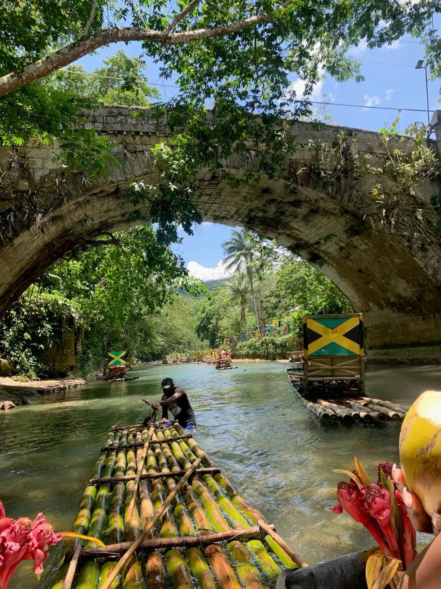
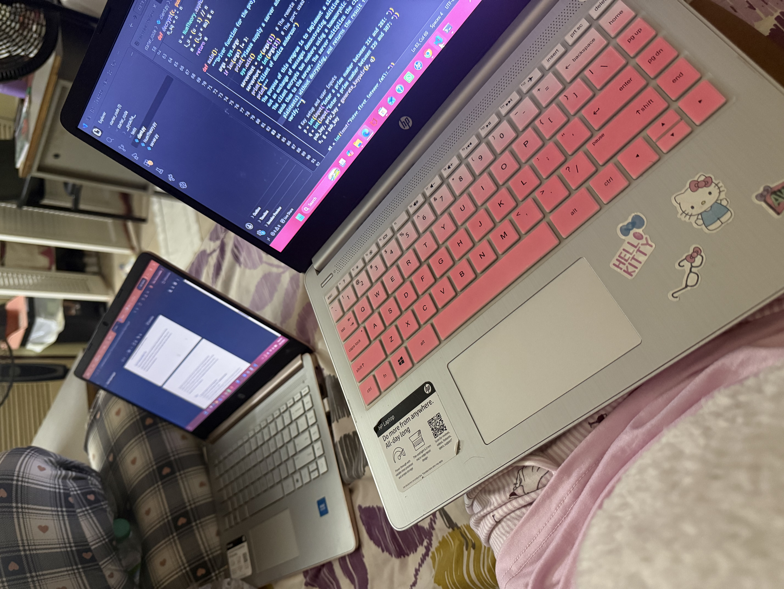

Getting to Know Me
October 5, 2026 by Donica Anderson

I would describe myself as a quiet and easygoing person. In my free time, I enjoy watching YouTube videos and vlogs, sleeping, listening to music, and going out with my friends. I also enjoy being around nature and visiting different places. Growing up in Jamaica has allowed me to experience beautiful beaches, mountains, and other natural scenery that I really appreciate.
I believe that the little things I enjoy are a big part of what makes me who I am. I like spending time with people I am comfortable around, making memories with my friends, and enjoying my free time when I am not focused on school. As I continue through university and get older, I hope to experience new things, meet new people, and continue growing into the person I want to become.
My Journey as a Computer Science Student
September 27, 2026 by Donica Anderson

My name is Donica Anderson, and I am currently a Computer Science student at university. I chose Computer Science because I have an interest in technology and wanted to learn more about how computers, websites, and software work. Throughout university, I have been learning different programming languages and working on different projects and assignments. Some topics can be difficult at times, but I enjoy learning new things and seeing myself improve.
Being a Computer Science student has also taught me the importance of patience and problem-solving. There are times when my code does not work the way I want it to, but I have learned to keep trying until I figure out the problem. I am still developing my skills and learning more every day, and I hope to use my knowledge in the future to create useful and interesting things.